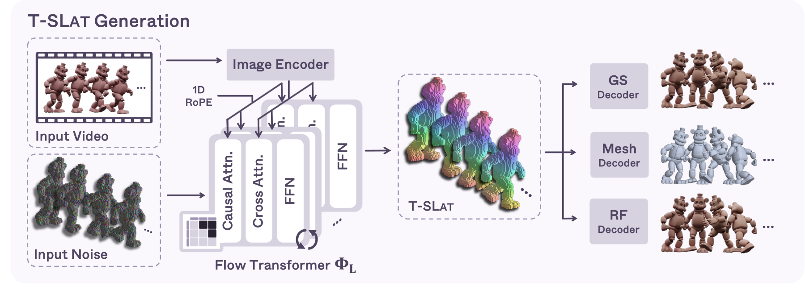
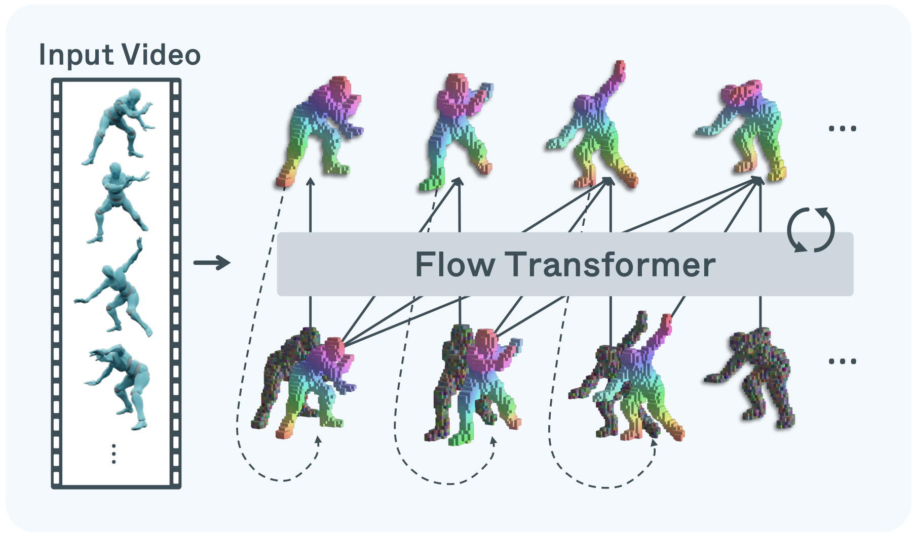
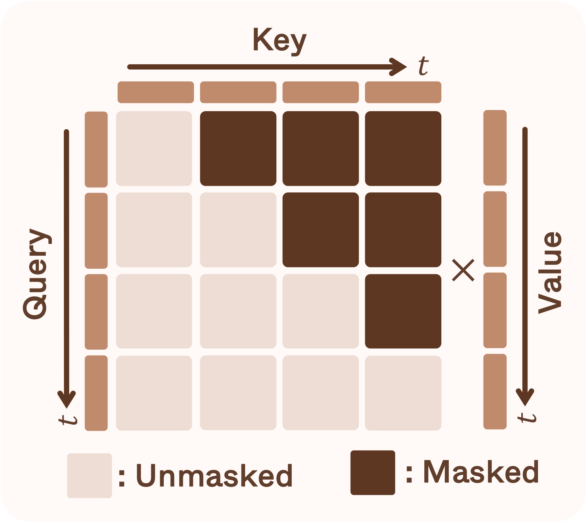
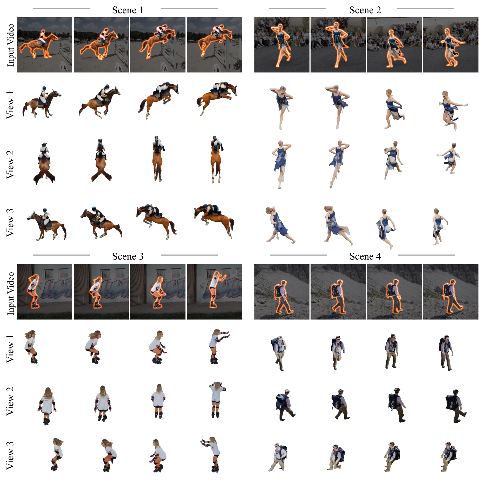
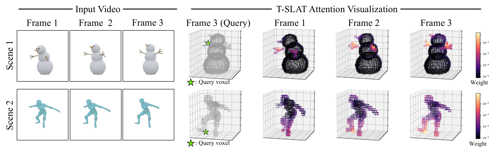
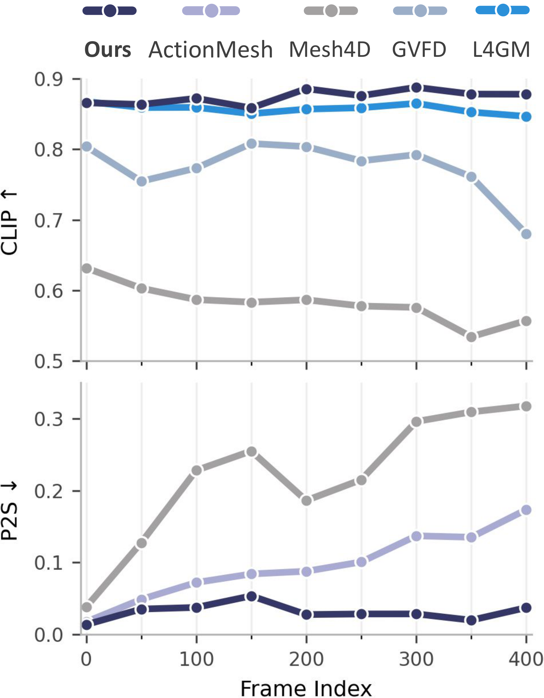

MORPHOS
Autoregressive 4D Generation with Temporal Structured Latents

We present MORPHOS, an autoregressive 4D generative framework that produces dynamic 3D assets from video across diverse representations — meshes, 3D Gaussians, and Radiance Fields. We introduce Temporal Structured Latents (T-SLAT), a unified 4D representation that jointly encodes geometry and appearance over time. With causal attention, MORPHOS conditions each frame on its preceding history, and a temporal-structural augmentation strategy mitigates error accumulation for robust long-horizon generation.
Video Results
Flip through samples — each shows the input video alongside MORPHOS's 4D mesh novel view renderings.
Why is video-to-4D generation hard?
Existing 4D generation methods perform well in narrow settings, but face three recurring limitations:
Representation fragmentation
Most frameworks specialize in a single 3D format — meshes or Gaussians — restricting generalization across modalities.
Fixed-topology constraints
Deformation-based modeling keeps temporal consistency for rigid motion but cannot handle topological changes or large structural shifts.
Error accumulation
Long-horizon generation drifts as self-generated history degrades, breaking temporal consistency over long videos.
MORPHOS addresses all three: a unified 4D latent (T-SLAT) decodable to meshes / Gaussians / radiance fields, autoregressive causal generation that accommodates evolving topologies, and temporal-structural augmentation for stable long-horizon rollouts.
A single model across representations and long horizons
| Method | Mesh | 3D Gaussian | Radiance Field | Long-horizon |
|---|---|---|---|---|
| Motion324 | ✓ | ✗ | ✗ | ✓ |
| ActionMesh | ✓ | ✗ | ✗ | ✗ |
| Mesh4D | ✓ | ✗ | ✗ | ✗ |
| L4GM | ✗ | ✓ | ✗ | ✓ |
| GVFD | ✗ | ✓ | ✗ | ✗ |
| MORPHOS (Ours) | ✓ | ✓ | ✓ | ✓ |
Method
Temporal Structured Latents (T-SLAT)
We extend Structured Latents (SLAT) into the temporal domain to obtain a unified 4D representation that jointly encodes geometry and appearance along time. An animated mesh sequence is normalized into a shared canonical space via a global union axis-aligned bounding box, then encoded by a sparse VAE into T-SLAT. A single T-SLAT can be decoded into meshes, 3D Gaussians, and radiance fields.

Autoregressive 4D Generation
MORPHOS factorizes 4D generation as a Markovian process: each latent zt is conditioned on the preceding history z<t and the current video frame. Two rectified-flow transformers generate the sparse structure (voxels) and then the T-SLAT conditioned on it. A causal attention architecture with a sliding window restricts each query to its history, enabling arbitrarily long generation and KV caching for efficient inference.


Training with Temporal-Structural Augmentation
Autoregressive models are trained on ground-truth history but must generalize to imperfect, self-generated history at inference. To bridge this gap, MORPHOS trains both flow transformers with a temporal-structural augmentation strategy.
Temporal augmentation
Assigns an independent noise level per frame during training, exposing the model to histories of varying quality so it stays robust to cumulative errors in autoregressive rollouts.
Structural augmentation
Randomly drops voxels in the sparse structure conditioning T-SLAT generation, making the model robust to structural inaccuracies propagated from the structure-generation stage.
Qualitative Results
Appearance
MORPHOS produces visually consistent, high-fidelity appearance with stable textures across the sequence, while deformation-based baselines cannot model topological changes and frame-wise TRELLIS loses temporal consistency.
Qualitative results on appearance. MORPHOS maintains stable, high-fidelity textures throughout the sequence.
Geometry
Rendered normal maps show MORPHOS generates geometrically faithful structures and handles complex topological transitions where fixed-topology methods distort or fail.
Qualitative results on geometry. MORPHOS preserves accurate shape and temporal consistency through topological changes.
Generalization to Real Domain

Quantitative Results
Evaluated against state-of-the-art video-to-4D baselines and the image-to-3D model TRELLIS. Bold = best, underline = second best per column.
Quantitative evaluation on Motion80, split into short and long sequences (long > 128 frames).
| Method | LPIPS↓ | CLIP↑ | DreamSim↓ | FVD↓ | CD↓ | F-score↑ | P2S↓ |
|---|---|---|---|---|---|---|---|
| Short | |||||||
| Motion324 | 0.2118 | 0.8051 | 0.2347 | 336.63 | 0.0615 | 0.3259 | 0.0308 |
| ActionMesh | – | – | – | – | 0.1062 | 0.2597 | 0.0528 |
| Mesh4D | 0.2023 | 0.7186 | 0.3465 | 592.56 | 0.1791 | 0.0712 | 0.0813 |
| TRELLIS | 0.2031 | 0.8643 | 0.1861 | 796.51 | 0.2033 | 0.1354 | 0.1022 |
| L4GM | 0.1296 | 0.8663 | 0.1605 | 188.32 | – | – | – |
| GVFD | 0.1661 | 0.8439 | 0.1998 | 328.14 | – | – | – |
| MORPHOS (Ours) | 0.1505 | 0.8751 | 0.1512 | 246.22 | 0.0761 | 0.1455 | 0.0320 |
| Long | |||||||
| Motion324 | 0.2347 | 0.7905 | 0.2407 | 889.93 | 0.0701 | 0.2335 | 0.0353 |
| ActionMesh | – | – | – | – | 0.1614 | 0.1718 | 0.0786 |
| Mesh4D | 0.2408 | 0.5860 | 0.5170 | 1327.54 | 0.4724 | 0.0265 | 0.2250 |
| TRELLIS | 0.2118 | 0.8359 | 0.2005 | 1527.19 | 0.2383 | 0.0875 | 0.1177 |
| L4GM | 0.1355 | 0.8578 | 0.1535 | 487.44 | – | – | – |
| GVFD | 0.1796 | 0.8049 | 0.2319 | 827.03 | – | – | – |
| MORPHOS (Ours) | 0.1494 | 0.8670 | 0.1526 | 330.59 | 0.0792 | 0.1371 | 0.0350 |
MORPHOS achieves the best CLIP and DreamSim across both splits and the best long-sequence FVD, demonstrating robust long-horizon appearance consistency.
Quantitative evaluation on ActionBench (128 animated scenes, 16 frames each).
| Method | LPIPS↓ | CLIP↑ | DreamSim↓ | FVD↓ | CD↓ | F-score↑ |
|---|---|---|---|---|---|---|
| Motion324 | 0.2025 | 0.8304 | 0.2257 | 195.25 | 0.1082 | 0.2013 |
| ActionMesh | – | – | – | – | 0.0898 | 0.2146 |
| Mesh4D | 0.1700 | 0.8114 | 0.2447 | 403.20 | 0.1776 | 0.1235 |
| TRELLIS | 0.2005 | 0.8367 | 0.2199 | 547.21 | 0.1903 | 0.1367 |
| L4GM | 0.1908 | 0.8071 | 0.2522 | 211.55 | – | – |
| GVFD | 0.1687 | 0.8301 | 0.2335 | 188.67 | – | – |
| MORPHOS (Ours) | 0.1904 | 0.8551 | 0.1857 | 203.02 | 0.0972 | 0.2138 |
MORPHOS leads on perceptual appearance (CLIP, DreamSim) while remaining second-best on geometry among methods that also model appearance.
Appearance evaluation on Consist4D (7 videos, 32 frames each).
| Method | LPIPS↓ | CLIP↑ | DreamSim↓ | FVD↓ |
|---|---|---|---|---|
| Motion324 | 0.2044 | 0.8285 | 0.2013 | 936.68 |
| Mesh4D | 0.1769 | 0.7968 | 0.2507 | 1189.67 |
| TRELLIS | 0.2479 | 0.8044 | 0.2962 | 1488.32 |
| L4GM | 0.1633 | 0.8374 | 0.2063 | 825.64 |
| GVFD | 0.1487 | 0.8142 | 0.1706 | 821.75 |
| MORPHOS (Ours) | 0.1531 | 0.8571 | 0.1849 | 1013.11 |
MORPHOS achieves the best CLIP similarity and competitive LPIPS / DreamSim on real-world video inputs.
Ablation studies on ActionBench. Each variant trained for 10k iterations.
| Component | LPIPS↓ | CLIP↑ | DreamSim↓ | FVD↓ | CD↓ | F-score↑ |
|---|---|---|---|---|---|---|
| (a) w/o Causal attn. | 0.1578 | 0.8487 | 0.1979 | 323.20 | 0.1305 | 0.1986 |
| (b) w/o Temporal aug. | 0.1668 | 0.8415 | 0.2084 | 424.43 | 0.1291 | 0.1909 |
| (c) w/o Structural aug. | 0.1670 | 0.8399 | 0.2087 | 397.78 | 0.1294 | 0.1906 |
| (d) w/o ΦL training | 0.1569 | 0.8503 | 0.1956 | 370.87 | 0.1209 | 0.2026 |
| (d) w/o ΦS training | 0.1670 | 0.8400 | 0.2104 | 506.20 | 0.1770 | 0.1553 |
| MORPHOS (Ours) | 0.1576 | 0.8450 | 0.1966 | 321.37 | 0.1219 | 0.2088 |
Every component contributes: causal attention, temporal and structural augmentation, and training both flow transformers (ΦS, ΦL) are each needed for balanced geometry, appearance, and video consistency.
Inference-time analysis on a single B200 GPU for a 16-frame video.
| Setting | Time (s) | LPIPS↓ | CLIP↑ | DreamSim↓ | FVD↓ | CD↓ | F-score↑ |
|---|---|---|---|---|---|---|---|
| w/o Cache | 111.42 | 0.1591 | 0.8448 | 0.1987 | 325.39 | 0.1189 | 0.2084 |
| w/ Cache | 54.90 | 0.1576 | 0.8450 | 0.1966 | 321.37 | 0.1219 | 0.2088 |
| w/ Cache & Few-step | 28.03 | 0.1606 | 0.8399 | 0.2086 | 326.58 | 0.1221 | 0.2029 |
KV caching gives a 2.03× speedup with negligible quality change; few-step sampling reaches a 3.98× speedup overall.
MORPHOS attains state-of-the-art appearance and competitive geometry across benchmarks, while a single unified model generalizes across representations and remains robust on long videos.
Analysis
Attention captures geometric correspondence
For a query voxel (green star) in the target frame, we visualize its attention over the conditioning frames' voxel tokens. MORPHOS establishes geometric correspondences in 3D and even exploits symmetry across frames — e.g., a query on one hand attends to both hands — supporting temporally consistent voxel generation.

Minimal error accumulation over long horizons
As video length grows, baselines degrade progressively in both appearance (CLIP↑) and geometry (P2S↓). MORPHOS stays substantially more stable across the full sequence, confirming that causal generation with temporal-structural augmentation mitigates error accumulation.

Citation
@article{kwon2026morphos,
title = {MORPHOS: Autoregressive 4D Generation with Temporal Structured Latents},
author = {Kwon, Minkyung and Choi, Jinhyeok and Shin, Youngjin and
Kim, Jaeyeong and Lee, JongMin and Kim, Seungryong},
journal = {arXiv preprint},
year = {2026}
}